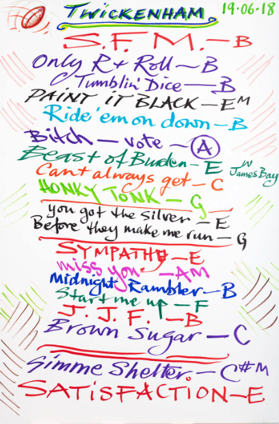
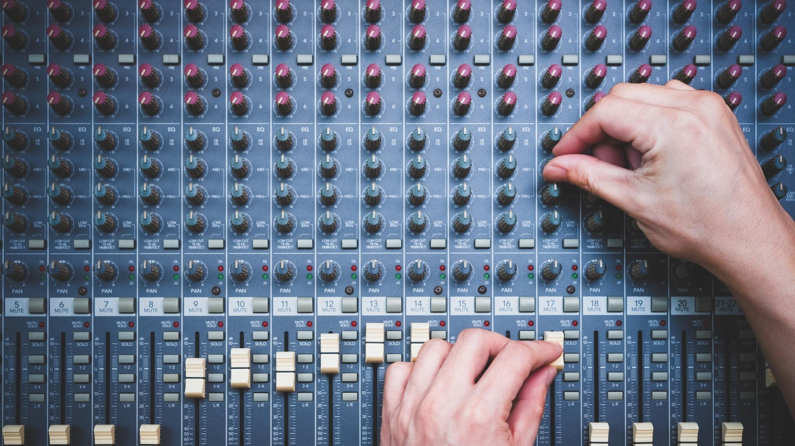
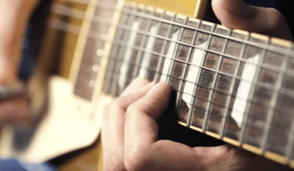

Two of my biggest passions in life are teaching and music. While I am increasingly certain that nobody would ever, ever pay me money to play music (unless they were into some strange, audio torture scene), I can draw parallels between performing music in a live setting and being a teacher. First time jitters, over or under-preparation, uncertainty about how your material will be received, timing issues, and the thrill of connecting with your audience are but a few ways in which live musical performance and teaching share common ground.
Below are some big learnings I have uncovered during my teaching journey
Set list matters. Knowing the venue, audience, and expectations is essential before crafting the optimal tone and message you are trying to convey. You shouldn’t walk into a local Thrash Metal venue with 90 minutes of Folk Music prepared, just as it is inadvisable to try and cram a 90 minute lecture on the Marginal Propensity to Consume down the throats of 30 freshmen bouncing off the walls. The more you understand who is in front of you, the better you can shape not just what you present, but how you present it. Energy, pacing, examples, and even humor all shift depending on the crowd, and ignoring that reality is a quick way to lose them before you ever really begin.
Not only is content of the set list important, but so is the order in which the material is presented and builds upon itself. Don’t start with Free Bird. It’s too complicated. Scaffold up to Free Bird. Give them something accessible early on, something that builds confidence and draws them in, then gradually raise the level of complexity as they get more comfortable and invested. If the listener/learner is taken on a journey that builds from the first note to the exit ticket in a logical progression, the connection is deeper and more lasting. A well-structured sequence creates momentum, and once that momentum is there, it becomes much easier to carry your audience with you through the more challenging or nuanced parts of the experience.


You can spend hours in the basement of your own head practicing a lesson with a perfect mental backing track, but until you have the literal feedback of a live classroom, you don't actually know if the bridge of your lesson is going to hold up. This year has taught me that a bad set isn't a failure, it’s just a rehearsal for the next time around. You take those notes, you adjust your tone, and you get back in front of your audience. The only way you are going to get better at performing live is going out there and making mistakes and figuring out common pitfalls and polishing your timing and content for the next time around.
But no matter how many times you have played that song or taught that class, because it is as much art as it is science, there is no one perfect way to do it. You may have the levels set perfectly for one group, but the next batch comes in with a completely different energy that requires you to adjust on the fly. Some days you need more gain to keep the momentum up, and others you have to dial it back or go unplugged to really hear what the students. It is always possible to tweak/add/remove material to further enhance the material. Every lesson is a work in progress, and should continue to be so as long as you continue to teach it.
The best performances are ones that sense the vibe in the room and adjust the tempo and mood of the material accordingly. Leapfrogging off the previous learning – as there is no perfect way to perform/teach lesson, then each song/lesson should be presented slightly differently each time around. Spend a little longer on one note, jump over another section almost entirely, depending upon how your audience is reacting.
Are they grooving on a particular section? Don’t be afraid to linger. Spend more time. Draw it out. Let them dictate what you do and where you go, but don’t forget to bring them back to the original theme of the song once you’ve riffed on some variations.
In the same way, both teaching and live music demand a strong foundation paired with flexibility. You walk in with a plan, your lesson or your setlist, but the real magic happens in the adjustments you make in the moment. A class, like an audience, gives constant feedback through energy, engagement, and body language. Great teachers and performers read those signals and respond, knowing when to slow things down, when to push forward, and when to pivot entirely. The structure provides direction, but responsiveness creates connection, turning a routine delivery into something dynamic and memorable.

At the end of the day, whether you are in front of a classroom or on a stage, the goal is the same. You are trying to create something that people feel, remember, and carry with them after it is over. Not every lesson lands perfectly and not every set brings the house down, but the moments when everything clicks make the missed notes worth it. Teaching, like music, lives in that space between preparation and spontaneity, structure and freedom. You show up, you read the room, you take your best shot, and you trust that with each performance you get a little tighter, a little more in tune with your audience, and a little closer to something that really resonates.